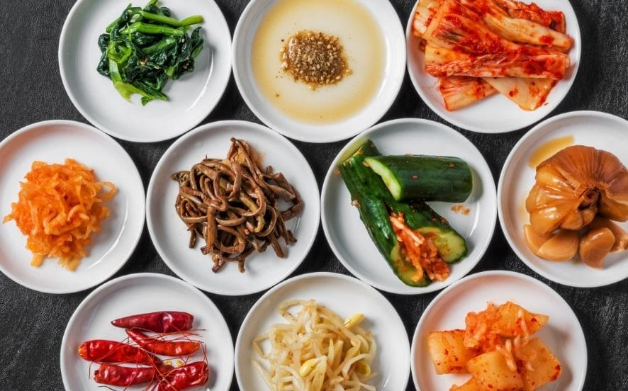

韓国は米が主食であり、箸を使う文化ですが、日本とは異なった食事マナーがあります。

野菜を使った発酵食品であるキムチは、韓国で出てくるあらゆる料理に付いてくる伝統食品です。白菜、大根、キュウリなどの様々な野菜を使い、作り方や見た目にもバリエーションがあります。キムチの健康に良い効果が科学的に立証され、韓国料理に対する世界的な関心が高まっています。
キュウリに薬味を挟んで漬けたキムチで、春から夏にかけてよく食べられます。
韓国人に一番よく食べられている、最も一般的なキムチです。塩漬けした白菜の葉一枚一枚に、大根の千切り、唐辛子粉、ニンニク、 魚醤などを混ぜ合わせたヤンニョムと呼ばれるタレを塗りこみ、発酵させて作ります。
大根を使ったキムチで、シャキシャキとした食感が特徴です。ほのかな甘味、旨味、辛味が調和し、スープ料理との相性が抜群です。
「粉食（プンシク）」とは、文字通りの意味は「小麦粉を使った料理」ですが、最近ではそれだけでなく、手軽に済ますことのできる軽食もひっくるめて「粉食」といっています。トッポッキ、ティギム（天ぷら）、スンデ、キンパプ、オムク（練り天）などがこの粉食に当たります。手ごろな値段で食べられるのが一番の魅力で、色々なメニューを一緒に頼んで味の組み合わせを楽しむこともできます。その他、プンオパン（たい焼き）、ホットク、あんまん、焼き芋のように、特定の季節のみ味わえる特別なストリートフードもあります。
韓国人の国民的おやつであり、粉食の花と呼ばれています。カレトク（細長い餅）をコチュジャンベースのタレで和えて煮詰めるのが最も一般的なスタイルです。クリームトッポッキ、ラーメン入りトッポッキなど、食材を変えて多彩な味のバリエーションを楽しむこともできます。
海苔の上にご飯と様々な具材を並べて巻いたもので、種類豊富で味も価格も千差万別です。粉食店はもちろん、コンビニ、サービスエリア、スーパー、デパートの食品売り場など、どこでも簡単に買えるので便利です。
たっぷりの油で揚げるように焼き上げたもっちりした生地の中に甘い黒砂糖やナッツ類がたっぷり入っていて、子どもからお年寄りまで人気のおやつです。
世界有数のアルコール消費国、韓国の飲酒文化
米粉などを蒸して麹と水を混ぜて発酵させた韓国固有のお酒です。濁っていてアルコール度数が低いのが特徴です。五味子で有名な聞慶（ムンギョン）の五味子マッコリ、江原道（カンウォンド）のとうもろこしマッコリ、済州・牛島（ウド）のピーナッツマッコリなど、地域の特色を取り入れた特別なマッコリを味わう楽しさがあります。
覆盆子酒は全羅北道・高敞（コチャン）地域を代表する特産品で、高い滋養強壮効果があり、味と効能に優れたお酒として昔から愛されています。
穀物を発酵させて蒸留したり、アルコールを水で希釈して造られるお酒です。韓国人に一番飲まれているお酒でもあります。レモン、ユズ、グレープフルーツ、ブルーベリーなどを入れて作るフルーツ焼酎が最近人気を集めていて、マスカットやアップルなど様々なフレーバーも登場しています。
前橋市内で20年以上営業しているお店-身土不二